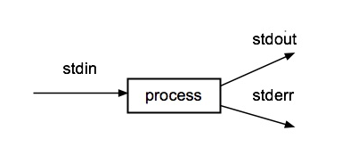

IT 244: Introduction to Linux/Unix
Class 12
Today's Topics
Review
New Material
Reading Assignment
The reading assignment for this week is chapter 5 of Sobell,
The Shell.
Homework 6
I have posted homework 6 here.
It is due this coming Sunday at 11:59 PM.
Review
Syntax of the Command Line
Command Options
- Options modify the behavior of the command
- Options are usually preceded by one or two dashes, -
- GNU programs frequently have options that are preceded by two dashes, --
- The options in GNU programs are usually words
- The options in other Unix programs are usually a single letter
- When a command uses a single dash, -, before an option ...
- you can usually combine options following the dash
- An example of this is
ls -ltr
- Options using two dashes, -- , usually cannot be combined
- In this case, each option must be written separately ...
- and preceded by two dashes
- Sometimes the option can have it's own argument
- Utilities that report the size of files usually do so in bytes
- Such utilities often have a -h, or --human-readable, option
- With this option, the file size will be displayed in kilobytes, megabytes or gigabytes, as appropriate
- Many commands display a help message when run with the --help option
- Most GNU utilities accept this option
tty
tty is the terminal
device driver
and is part of the kernel
- As you type each character at the command line ...
tty looks at the character and takes appropriate action- Most of the time,
tty just takes the character you type ...
- and places it in a buffer
- It responds differently to the special editing characters
- Backspace
- The arrow keys
- Control A
- Control E
- Control U
- Control K
tty is where all
command line editing
takes place
- When
tty sees a newline character ...
- which is what you get by hitting Enter (PC) or Return (Mac) ...
- it passes the contents of the buffer to the shell
Parsing the Command Line
- The shell takes the command line and breaks it up into
tokens
- Tokens are strings of characters that can be printed ...
- unlike Control key sequences and
whitespace characters ...
- and are separated from each other by whitespace
- The act of breaking up text into tokens is called
parsing
- Next, the shell looks for the name of the command
- Usually, the command name is the first string on the command line
- The command can be specified by a simple filename
ls
- Or by using a
pathname
/bin/ls
The PATH System Variable
Running a Program in the Current Directory
- For security reasons, it is never advisable to put the current directory, . ...
- in the PATH list
- Then how do you run a program inside your current directory?
- You can do this using the following construction
./PROGRAM_NAME
- This will always work ...
- regardless of the contents of PATH
Running the Command Entered on the Command Line
New Material
Data Streams
- Computers work with information
- They take information in ...
- and they send information out
- We can think of these flows of information as data streams
- When we run a command that produces some result ...
- the characters that we see ...
- are a flow of information sent to the screen
- This is an output stream
- When we save a file ...
- this a a flow of information from the program
- to the disks
- This is also an output stream
- When we type something into a word processor ...
- this is a flow of information ...
- from the keyboard ...
- into the program
- This is an input stream
- When we open a file in a word processor ...
- this is a flow of information from the disk ...
- into the program
- This is also an input stream
Devices
- Devices are pieces of electronic equipment ...
- that communicate with the CPU ...
- through data streams
- They do this using device drivers ...
- which are software created by the manufacturer ...
- that allows the device to talk to the CPU ...
- through the
kernel
- Most device drivers support two way communication ...
- allowing both input streams ...
- and output streams
- Since the device drivers handle the details ...
- of data streams coming into or out of a device ...
- the kernel can treat input and output to any device ...
- in the same way
- It does not distinguish between the keyboard and the disk ...
- as devices that can provide input streams
- This makes things simple
Unix Devices Are Files
- One of the reasons why Unix is so powerful ...
- is that decisions were made when it was designed ...
- to keep it simple and elegant
- One such decision was how Unix treats devices
- In Unix devices are files
- If you think of this it makes sense
- The hard drive is a device ...
- that can provide both input ...
- and output
- You can read a file as input ...
- and save information to disk as a file ...
- for output
- Instead of creating some new thing ...
- to represent a device ...
- Unix just thinks of then as a special kind of file
- A device file
- This allows programs that run on Unix ...
- to send output to a device ...
- and take input from a device ...
- in the same way it does for a file
Multiuser Operating Systems
- In the 1970's when Unix was created ...
- computers were big, expensive machines
- In order use these machines efficiently ...
- multiuser operating systems were created ...
- which let many people use the same machine ...
- apparently at the same time
- The way this works is the machine does some work for each user ...
- giving them a slice of time on the CPU
- When their slice of time is up ...
- the machine stores the contents of RAM ...
- which holds the work that has been done ...
- in a special place in memory
- It then gives a time slice to the next user
- Because the machine is so fast ...
- it looks like several people are using the machine ...
- at the same time
The Monitor and Keyboard
- We tend to think of the computer screen ...
- and the keyboard ...
- as separate devices ...
- since we can buy and replace them separately
- But this is a recent development
- In the 1970 when Unix was created ...
- multiuser operating systems allowed several people ...
- to be connected to one very expensive computer
- This was done by connecting terminals ...
- the combination of a keyboard and a screen ...
- directly to the machine

- The terminal is a device ...
- so it needs a device driver
- tty is the device driver
- that handles both input and output ...
- to the terminal
- So tty is the device driver for both the keyboard ...
- and the screen
- Although we no longer use physical terminals ...
- tty remains ...
- to talk to the keyboard and screen ...
- connected to a Unix machine
ssh and Pseudo-terminals
Standard Input, Standard Output and Standard Error
- Every Unix process always has access to three different data streams
- Standard Input
- Standard Output
- Standard Error

- The programmer who creates the program running in the process ...
- does not have to use these streams ...
- but there are always given to a process
- Standard input
is where the program gets input ...
- unless the programmer decides to use another source
- By default, standard input is the keyboard
- Standard output
is where the program prints the results ...
- if it is not told specifically where to send it
- By default, standard output is the screen
- Standard error
is where the program sends error messages
- By default, standard error is the same as standard output ...
- the screen
- The end point of each of these data streams ...
- can be changed by the user ...
- using a Unix feature called
redirection
The Keyboard and Screen as Standard Input and Standard Output
Redirection
Redirecting Standard Output
- To redirect output use the greater than symbol, >
- followed by a filename
- This tells Unix to send the output from the command ...
- to the file or device that appears after the symbol
- The format for output redirection is
COMMAND [ARGUMENTS] > FILENAME
- For example, to save a list of everyone currently logged on, you could use
$ who > current_logins.txt
$ cat current_logins.txt
bmt11989 pts/1 2011-10-02 16:43 (c-24-147-18-10.hsd1.ma.comcast.net)
vtran pts/0 2012-09-26 17:34 (c-76-119-98-173.hsd1.ma.comcast.net)
abutawha pts/1 2012-09-26 17:36 (158.121.234.175)
ghoffman pts/2 2012-09-26 18:19 (dsl092-066-161.bos1.dsl.speakeasy.net)
Redirecting Standard Input
- When redirecting standard output, we were sending output ...
- to something other than the screen
- When we redirect standard input, we take input ...
- from something other than the keyboard
- To do this, we use the less than symbol, <
- Here is the format
COMMAND [ARGUMENTS] < FILENAME
- repeat.sh is a shell script ...
- that repeats the the text the user enters
$ ./repeat.sh
Enter line 1: 1
Enter line 2: 2
Enter line 3: 3
Enter line 4: 4
Enter line 5: 5
You entered
-----------
1
2
3
4
5
- But I can also take input from a file ...
- by redirecting standard input
$ cat five_lines.txt
Line 1
Line 2
Line 3
Line 4
Line 5
$ ./repeat.sh < five_lines.txt
You entered
-----------
Line 1
Line 2
Line 3
Line 4
Line 5
Redirecting Standard Output Can Destroy a File
- If you redirect standard output to a file that already exists ...
- you will overwrite the contents of that file
- You will replace the original contents of the file ...
- with the output of the new command
- There is a "noclobber" option in Bash to prevent this from happening
- But it is best to simply be careful about the file ...
- to which you redirect standard output
Adding Output to an Existing File
/dev/null
- Sometimes a program will do something useful ...
- but produce output you don't want
- For situations like this, Unix provides /dev/null
- Any output you send to /dev/null will disappear
- It will never appear on the screen
- If you redirect input to come from /dev/null ...
- the command will receive an empty string
- /dev/null is most useful when dealing with error messages
- Since error message normally go to the screen
- they will be mixed up with the regular output
- Redirecting standard error to /dev/null ...
- will prevent this from happening
- I will show you how to do this in a future class
- You can use /dev/null to test your scripts ...
- for errors
- The following script has a command that will cause an error
$ cat script_with_error.sh
# this script has an error
cd XXXXXX # line with error
ls -l /
- But if you run it, you probably won't spot the error ...
- because it scrolls off the top of the screen
$ ./script_with_error.sh
./script_with_error.sh: line 3: cd: XXXXXX: No such file or directory
total 73732
drwxr-xr-x 2 root root 4096 Oct 15 06:45 bin
drwxr-xr-x 3 root root 4096 Oct 15 06:45 boot
-rw------- 1 root root 75390976 Oct 8 00:06 core
drwxr-xr-x 102 root root 0 Oct 6 07:06 courses
drwxr-xr-x 46 root root 0 Oct 6 07:06 data
drwxr-xr-x 15 root root 4160 Oct 6 07:06 dev
drwxr-xr-x 119 root root 12288 Oct 15 13:32 etc
drwxr-xr-x 8 root root 0 Oct 6 07:06 groups
drwxr-xr-x 1943 root root 0 Oct 14 14:42 home
drwxr-xr-x 3 root root 4096 Aug 25 16:18 home.ORIG
lrwxrwxrwx 1 root root 33 Sep 29 06:40 initrd.img -> boot/initrd.img-3.16.0-50-generic
lrwxrwxrwx 1 root root 33 Sep 11 06:49 initrd.img.old -> boot/initrd.img-3.16.0-49-generic
drwxr-xr-x 21 root root 4096 Aug 26 22:46 lib
drwxr-xr-x 2 root root 4096 Aug 26 22:46 lib32
drwxr-xr-x 2 root root 4096 Aug 26 06:50 lib64
drwxr-xr-x 2 root root 4096 Aug 26 22:46 libx32
drwx------ 2 root root 16384 Aug 25 16:11 lost+found
drwxr-xr-x 3 root root 4096 Aug 25 16:12 media
drwxr-xr-x 2 root root 4096 Apr 10 2014 mnt
drwxr-xr-x 11 root root 0 Oct 6 07:06 nobackup
drwxr-xr-x 2 root root 4096 Feb 18 2015 opt
dr-xr-xr-x 522 root root 0 Oct 6 07:06 proc
drwx------ 4 root root 4096 Sep 9 14:22 root
drwxr-xr-x 19 root root 1020 Oct 15 13:31 run
drwxr-xr-x 2 root root 12288 Oct 15 06:45 sbin
drwxr-xr-x 174 root root 0 Oct 6 07:06 sources
drwxr-xr-x 5 root root 0 Oct 6 07:06 spool
drwxr-xr-x 2 root root 4096 Feb 18 2015 srv
dr-xr-xr-x 13 root root 0 Oct 6 22:29 sys
drwxrwxrwt 40 root root 4096 Oct 15 13:32 tmp
drwxr-xr-x 2 root root 4096 Sep 21 16:28 TMP
drwxr-xr-x 269 root root 0 Oct 6 07:06 tools
drwxr-sr-x 2 root root 4096 Aug 26 23:30 users
drwxr-xr-x 12 root root 4096 Aug 26 22:46 usr
drwxr-xr-x 12 root root 4096 Oct 15 05:45 var
lrwxrwxrwx 1 root root 30 Sep 29 06:40 vmlinuz -> boot/vmlinuz-3.16.0-50-generic
lrwxrwxrwx 1 root root 30 Sep 11 06:49 vmlinuz.old -> boot/vmlinuz-3.16.0-49-generic
- But if you run the script and redirect standard output to /dev/null ...
- all you will see will be the error messages
$ ./script_with_error.sh > /dev/null
./script_with_error.sh: line 3: cd: XXXXXX: No such file or directory
- I use this trick in my testing scripts ...
- to check your Class Exercises
- You should use this trick to test all your scripts
Attendance
Class Quiz